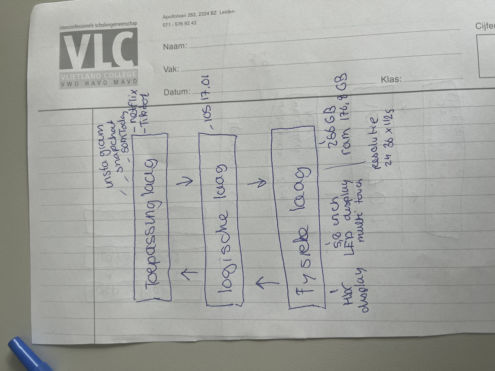

Het "drie lagen menu" is een term die vaak wordt gebruikt in de context van gebruikersinterfaces en interactieontwerp, met name voor websites en mobiele apps. Het verwijst naar de organisatie van de navigatiestructuur en de manier waarop informatie en functies aan gebruikers worden gepresenteerd. Deze aanpak heeft als doel de gebruikerservaring te verbeteren door informatie hierarchisch te structureren in drie hoofdlagen. Laten we elk van deze lagen nader bekijken:
De Eerste Laag: Navigatie Dit is de bovenste laag van de interface en bevat doorgaans de belangrijkste en meest algemene navigatie-opties.
De Tweede Laag: Subnavigatie of Categorieën Onder de eerste laag bevindt zich de tweede laag, die meer gedetailleerde informatie bevat en vaak onderliggende categorieën of subsecties vertegenwoordigt.
De Derde Laag: Pagina-inhoud of Functionaliteit Dit is de onderste laag van de menustructuur en bevat de eigenlijke pagina-inhoud of de specifieke functies die gebruikers nodig hebben.
Hieronder is een tekening van een 3 lagen model van mijn telefoon
